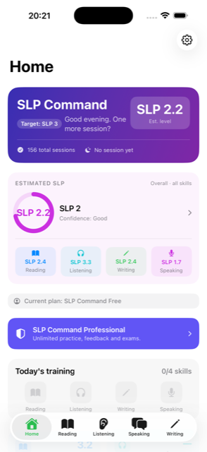
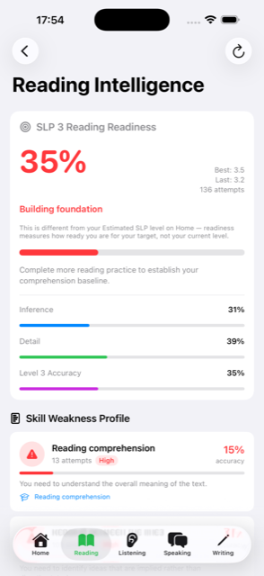
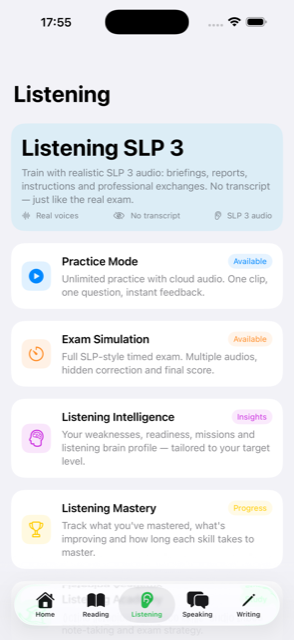
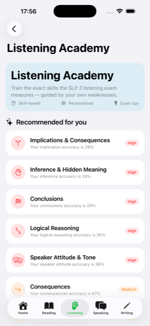
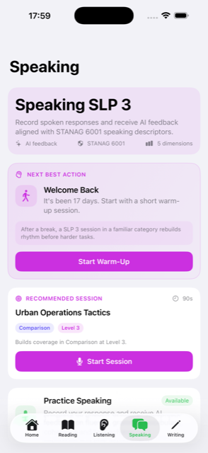
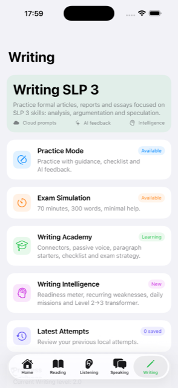

Military English training for STANAG 6001 / SLP-style exams, Level 2 through Level 3. Reading, Listening, Writing and Speaking — measured against the constructs the exam actually rates, so what you are told to practise next is a consequence of your own results rather than a generic study plan.
iOS app — coming to the App Store






Platform
One platform, both target levels. Every exercise, every exam simulation and every AI evaluation is built to the level you are training for — SLP 2 or SLP 3 — with its own question formats, time limits and rating criteria, not a single difficulty curve with the numbers moved.
Exercises adapt in real time to your estimated level and to weak sub-skills specifically — not just overall difficulty. A spaced-review scheduler resurfaces items you got wrong until they stick.
Timed, full-length mock exams for Reading, Listening, Speaking and Writing, built to the SLP 2 and SLP 3 formats separately — question count, time limits and scoring bands match the level you select.
11 structured topics per skill — grammar and strategy references, dozens of worked examples with step-by-step reasoning, and a short quiz per topic with immediate, explained feedback.
Per-skill weakness profiles, a readiness assessment against your target level, and the sub-skills your recent results actually separate you on. Recomputed after every session, and every figure is traceable to the attempts that produced it — never to a rolling average that nobody can audit.
Speaking is transcribed and rated across five criteria — fluency, grammar, vocabulary, coherence and task achievement. Writing is rated on task achievement, content & organisation and language precision, with an improved version returned beside your own so the difference is visible rather than described.
Accuracy trends over 7, 30 and 90 days per skill, with a mastered / developing / needs-work state and an estimated number of attempts to mastery. A decline is reported as a decline: skills decay when they are not used, and a platform that hides that is not measuring anything.
A short, prioritised list of what to work on next, derived from your own weakness profile rather than from a syllabus. It changes when your results change, and it says what it is responding to.
Your account, progress, scores and Academy status sync automatically — pick up training on any device without losing history.
Method
Most exam apps are content libraries with a score on top. The difference here is not the volume of material — it is what the product is willing to claim, and what it refuses to say when it has not measured it. These are the rules the assessment and the recommendations are built on.
If there is not enough evidence about a sub-skill, the product says so and shows you how much is missing. It does not fill the gap with a plausible number. An estimate you cannot challenge is an estimate you cannot trust.
"Work on this next" always arrives with the results that produced it — how many observations, from which skills, and what changed. There is no black box, because advice you cannot check is advice you cannot act on with confidence.
STANAG 6001 levels are not averages. A strong performance in one area does not compensate for a gap in another, and the assessment does not let it: the level you are shown is bounded by the evidence you have actually produced at that level, never by a mean across dimensions.
Every estimate carries how certain it is and what would make it more certain — more answers near your current level, more constructs covered, evidence from a timed exam rather than practice, or simply more recent work. Uncertainty is information, not a flaw to be smoothed over.
Language skills fade when they are not used. When a measurement moves down, you are told plainly — along with the one thing worth knowing about it: recovering something you had is faster than learning it, and it is worth doing before it slips further.
Nothing here invents a pedagogy the assessment cannot observe. The constructs the platform measures are the ones the exam rates — the Speaking criteria, the Reading and Listening sub-skills, the Writing dimensions — so improving a number here means improving something a rater would actually notice.
Architecture
Four skills, one learner. The point of a single model is that a Speaking problem caused by a Writing gap can be named as such — which is impossible when each skill keeps its own opinion about the same person.
Every rated attempt — a reading question, a listening item, a written submission, a spoken response — becomes an observation carrying what was asked, at which level, and how it went. Nothing is recorded that was not measured.
Observations update an estimate of your ability together with how uncertain that estimate is. Items near your current level carry the most information; an item far above or below it moves the estimate less, because it tells us less.
Evidence loses weight over time rather than being deleted. A correct answer from eight months ago is not the same claim about you as one from last week, and the model treats it accordingly instead of averaging both as if they were.
The number you are shown is capped by what you have actually demonstrated at that level, and it is accompanied by its confidence and by what would raise it. Where the evidence does not reach, the product says the evidence does not reach.
Validation before promotion. A new assessment engine built to these rules runs in parallel with the one currently in service, observing the same activity and recording what it would have concluded, without affecting anything you see. It replaces the current estimator only when a published set of criteria is met — a minimum volume of real evidence, a minimum period of continuous observation, zero invariant violations when real learner histories are replayed through it, and a demonstrated ability to roll back. Passing those criteria makes it eligible for calibration against field data. It does not make it live. That decision is separate, staged, and reversible at every step.
Pricing
The Free plan gives you real weekly and monthly practice allowances on every skill — not a locked demo. SLP Command Professional removes every cap.
Get started with real practice volume, every skill included.
Your complete preparation for STANAG 6001 certification.
Billed monthly. Cancel anytime in your Apple ID settings.
Free-plan limits reset weekly (Reading, Listening) or monthly (Writing, Speaking, Exam Simulation) and are the same at every target level (SLP 2 or SLP 3).
How it works
Sign up with your email. Your progress syncs across devices automatically.
Set your target level — SLP 2 or SLP 3 — and start training in any skill. The first sessions are as much measurement as practice: they establish where you actually are, which is the only thing that makes the rest of the plan meaningful.
Intelligence updates after every session and the Adaptive Coach names one thing to do next, with the results behind it. Practice adapts to the specific sub-skills you are losing marks on, and a spaced-review scheduler brings back what you got wrong until it holds.
Full-length, timed simulations in the format of your target level. Evidence from a timed exam counts for more than practice, because it was produced under the conditions the real assessment imposes.
Readiness is reported against your target level with the confidence attached, and with what is still missing named explicitly. Walking into the exam knowing which two things are weakest is worth more than a number that says you are fine.
Roadmap
Listed here because a roadmap that only appears once something ships is a marketing page, not a roadmap. Everything below is built and verified but not yet released — nothing on this list is available in the app today, and none of it is included in what you pay for until it is.
A home screen that answers a single question — what should I do right now — with the reasoning behind it and one button that opens it. Instead of four modules and a dashboard to choose between, a short briefing: where you are, what to work on, why, and what to ignore today.
Sub-skills depend on each other: you cannot infer an argument from a text whose vocabulary you do not have. The roadmap draws those dependencies, and nothing is ever shown as locked without naming what locks it and why working on that first is faster.
Not a chart — a chronology. Every point at which something changed, what caused it, what it made possible, and what happened while you were away. Reconstructed from your measured history, so it can never show a milestone the current model would not award.
The estimator described under Architecture, currently observing in parallel without affecting anything you see. It becomes the platform's source of truth only after it meets its published promotion criteria on real evidence — and then only through a staged rollout that can be reversed at any point.
FAQ
Yes. Manage or cancel your subscription at any time from your Apple ID settings.
No. Your practice history and results are always saved to your account.
Yes, €9.99 billed monthly until cancelled.
No. SLP Command is an independent educational platform, not affiliated with NATO, any Ministry of Defence, or any official examining body. AI-generated feedback is indicative guidance to help you prepare — not an official SLP / STANAG 6001 assessment.
SLP Command trains SLP Level 2 and SLP Level 3 across all four skills — Reading, Listening, Writing and Speaking. Every exercise and every AI evaluation adapts to whichever level you select.
Yes. Your account, progress, scores and Academy status sync automatically, so you can pick up training on any device without losing history.
From your own rated attempts, nothing else. Each answer, submission and spoken response updates an estimate of your ability along with how uncertain that estimate is; items close to your current level carry more weight than ones far from it, and older evidence counts for less than recent evidence. The level shown is bounded by what you have actually demonstrated — it is never an average across skills, because STANAG 6001 levels are not averages.
Because it has not measured enough to give you an honest one. When there is too little evidence about a sub-skill, the platform says so and tells you what would resolve it, rather than showing a plausible figure derived from nothing. A number you cannot rely on is worse than no number, particularly when you are deciding whether to book an exam.
Usually because recent results are below earlier ones, or because evidence ages. That is a measurement, not a verdict on you: language skills decay when they are not used. It is also the most actionable thing the platform can tell you, since recovering something you had is considerably faster than learning it for the first time.
There is one other reason, and it is not about you at all: we sometimes improve how the estimate is worked out. When that happens your number can move without anything about your English having changed. You are told when it does, and why — see My estimate changed and I did not do anything differently below.
Then the change is ours, not yours. An estimate is only as good as the method behind it, and when we find that a method credited progress too easily we correct it — which can move your number even though your English is exactly where it was.
The earlier method nudged your level up a little with every correct answer and down by less with every wrong one. Over enough questions that drifts upward on its own, so the figure could end up above what your answers actually supported. The current method asks a different question: how do you perform on questions at each level? That is the same question the real assessment asks.
We show you the new figure alongside the old one before anything changes, so it is never a surprise. Your history is kept as it was — we do not rewrite numbers you were previously shown — and results from before and after the change are drawn separately, because they are not directly comparable.
That we are no longer confident the estimate describes you today. It says nothing about how good you are — it is a statement about the evidence, which has simply aged.
Confidence answers one question: how far should we trust this estimate right now? So it has four settings, and each tells you something different:
Confidence starts to fade after about six weeks without practice in a skill, and each skill ages on its own — practising Reading every day does not keep your Speaking estimate current.
The evaluation is produced by AI models against fixed rating criteria, and the criteria — not the model's opinion — are what the score is expressed in. Every rating comes back with the reasoning that produced it, so you can disagree with it on specifics. It remains indicative guidance for preparation: it is not, and does not claim to be, an official STANAG 6001 rating.
A course delivers a syllabus in a fixed order to everyone. This does not have a syllabus: it has a model of you, rebuilt after every session, and it uses that model to choose the next thing. It also does something a course structurally cannot — it tells you when it does not know, and it shows you the evidence behind every claim it makes about your English.